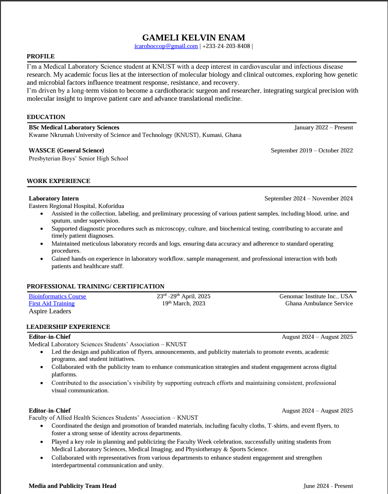

Research Interest
Cardiovascular genetics, molecular medicine, and understanding disease mechanisms through laboratory research.
Medical Laboratory Sciences Student
Medical Laboratory Sciences Student | Bridging Laboratory Medicine, Research & Healthcare Innovation
KNUST · Biomedical Research · Cardiovascular Genetics
Integrating laboratory medicine, biomedical research & data science.

I am a Medical Laboratory Sciences student interested in cardiovascular health, genetics, and biomedical innovation. My academic work focuses on disease mechanisms through laboratory science. This prepares me for a future career in medicine.
My current research focuses on the ACE I/D polymorphism and its effect on cardiometabolic risk in a Ghanaian population. This work is sharpening my skills in molecular techniques and biomedical data analysis.
Outside the lab, I am strengthening my abilities in data science and scientific communication. My ultimate aim is to become a cardiothoracic surgeon who combines clinical practice, research, and innovation to enhance patient outcomes.
Cardiovascular genetics, molecular medicine, and understanding disease mechanisms through laboratory research.
Developing skills in laboratory techniques, statistical analysis, programming, and biomedical research.
Building toward a future career in cardiothoracic surgery while integrating research and technology into healthcare.
My undergraduate research investigates the relationship between the ACE insertion/deletion (I/D) polymorphism and cardiometabolic risk factors among hypertensive and normotensive Ghanaian adults. The study aims to improve understanding of genetic influences on cardiovascular risk and support future strategies for early risk assessment.
Laboratory TechniquesDoes the ACE insertion/deletion (I/D) polymorphism influence cardiometabolic risk factors among hypertensive and normotensive Ghanaian adults?
Ghanaian adults — hypertensive and normotensive participants, recruited for the final year research project.
Final year project — updated as work progresses
Understanding the genetic basis of cardiovascular disease in African populations.
Exploring how genetic variation can inform personalized prevention and treatment.
Applying data science and machine learning to improve clinical decision-making and laboratory medicine.
This section will be updated with my dissertation, conference presentations, posters, publications, and other scholarly outputs as they become available.
Hands-on techniques developed through rotations, coursework & research
Applied in final year research project
Gained through clinical rotations & coursework
Developing competencies — growing with every rotation & project
Developing expertise in clinical diagnostics, laboratory practice, and disease investigation.
Building experience in molecular biology, genetics, and clinical research.
Learning programming and statistical methods to support biomedical research and healthcare analytics.
Working toward medical training with the long-term goal of specializing in cardiothoracic surgery while contributing to cardiovascular research.
Building credentials for research & data-driven medicine
Explore my academic background, laboratory experience, research activities, and professional development journey.

Open Full ↗Open to research collaboration, academic mentorship, and conversations about laboratory medicine, cardiovascular genetics, or the journey toward cardiothoracic surgery.
icaroboccop@gmail.com